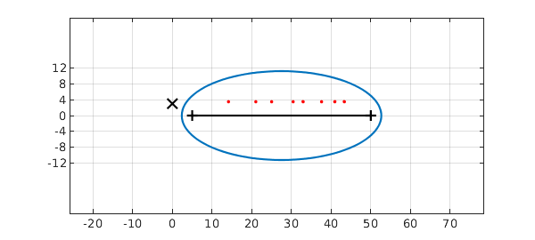
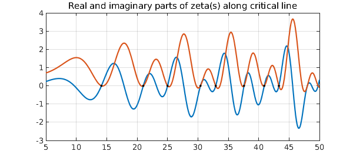

The celebrated Riemann Hypothesis asserts that all the zeros of the zeta function $\zeta(s)$ (apart from those on the negative real axis) lie on the critical line $\hbox{Re} s = 1/2$ in the complex $s$-plane. Computation of $\zeta(s)$ and its zeros is a highly advanced subject and this Example certainly will not contribute anything substantial to it. However, we can show how easily certain kinds of analytic contination can be carried out in Chebfun.
A formula for $\zeta(s)$ that converges for $\hbox{Re}(s) >1$ is $$ \zeta(s) = \sum_{k=1}^\infty k^{-s}. $$ For $\hbox{Re}(s) \ge 4$, we can get approximately 16-digit precision with $$ \zeta(s) \approx \sum_{k=1}^{100000} k^{-s}. $$ So here's our crude zeta function (note the summation in reverse order to minimize accumulation of rounding errors):
tic zeta = @(s) sum((1e5:-1:1).^(-s));
For example, here are zeta(4) and the corresponding exact result:
zeta(4) exact = pi^4/90
ans = 1.082323233711138 exact = 1.082323233711138
Let's work with a parameter $t \in [5, 50]$, and define $s = 4 + it$, so that $s$ ranges over the complex interval $[4+5i, 4+50i]$.
s = chebfun(@(t) 4+1i*t,[5 50]);
We now construct a chebfun (a complex function of the real parameter $t$) corresponding to the zeta function:
f = chebfun(@(t) zeta(s(t)),[5 50],'vectorize')
f =
chebfun column (1 smooth piece)
interval length endpoint values
[ 5, 50] 75 complex values
vertical scale = 1.1
Here is the Chebfun ellipse of $f$ (see Chapter 8 of [Trefethen 2013]) together with the numerically computed roots of $f$ in in the ellipse. A black X is also marked to show the pole of the zeta function.
plotregion(f), xlim([-5 60]), axis equal, grid on zeros_t = roots(f,'complex','norecursion'); MS = 'markersize'; hold on, plot(zeros_t,'.r',MS,15) plot(0,3,'xk','markersize',12), hold off set(gca,'ytick',-12:4:12), grid on

Transplanted back to the $s$ variable, we see that the computed roots match the corresponding exact ones to 8 or 9 digits after the decimal point:
zeros_s = s(zeros_t);
zeros_exact = 0.5 + 1i*[14.1347251417 21.0220396388 25.0108575801 ...
30.4248761259 32.9350615877 37.5861781588 40.9187190121 43.3270732809]';
ss = '%13.10f + %13.10fi %13.10f + %13.10fi\n';
disp(' Chebfun Exact')
fprintf(ss,[real(zeros_s) imag(zeros_s) ...
real(zeros_exact) imag(zeros_exact)].')
Chebfun Exact 0.5000000000 + 14.1347251419i 0.5000000000 + 14.1347251417i 0.5000000000 + 21.0220396388i 0.5000000000 + 21.0220396388i 0.5000000000 + 25.0108575802i 0.5000000000 + 25.0108575801i 0.5000000000 + 30.4248761259i 0.5000000000 + 30.4248761259i 0.5000000000 + 32.9350615877i 0.5000000000 + 32.9350615877i 0.5000000000 + 37.5861781588i 0.5000000000 + 37.5861781588i 0.4999999999 + 40.9187190122i 0.5000000000 + 40.9187190121i 0.5000000001 + 43.3270732805i 0.5000000000 + 43.3270732809i
Here is a plot of the real and imaginary parts along the critical line. The black dots at their intersections are the computed zeros.
t = chebfun('3.5i+t',[5 50]);
ft = f(t);
plot([imag(ft) real(ft)])
title('Real and imaginary parts of zeta(s) along critical line')
hold on, plot(real(zeros_t),imag(zeros_t-3.5i),'.k',MS,15)
grid on, hold off

The mathematics of what we have done in this Example is nothing more than polynomial approximation in the complex plane, which worked well because we stayed away from the pole of $\zeta(s)$ at $s=1$. Near $s=1$, one could still use polynomial approximation by working with $\zeta(s)/(s-1)$, which is an entire function (i.e., analytic for all values of $s$). Alternatively, a more powerful approach to numerical analytic continuation is to use rational approximations, which can be computed in Chebfun with the ratinterp command. For the zeta function with its single pole, rational approximations of type $(m,1)$ ($m$ zeros, 1 pole) may be sufficient to get good information. More generally one uses approximation of type $(m,n)$, typically with $n$ rather small. See Chapters 23, 26 and 28 of [Trefethen 2013].
Total time taken by this example:
toc
Elapsed time is 3.360643 seconds.
Reference:
- L. N. Trefethen, Approximation Theory and Approximation Practice, SIAM, 2013.